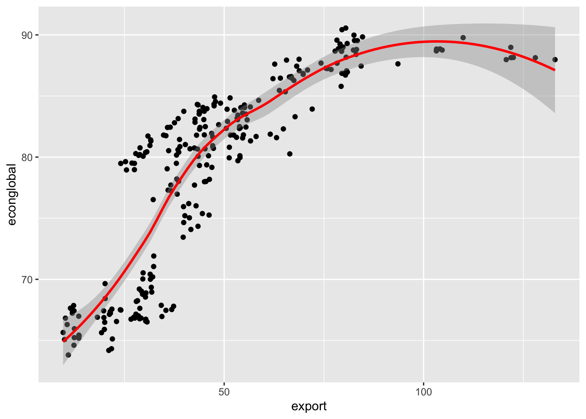
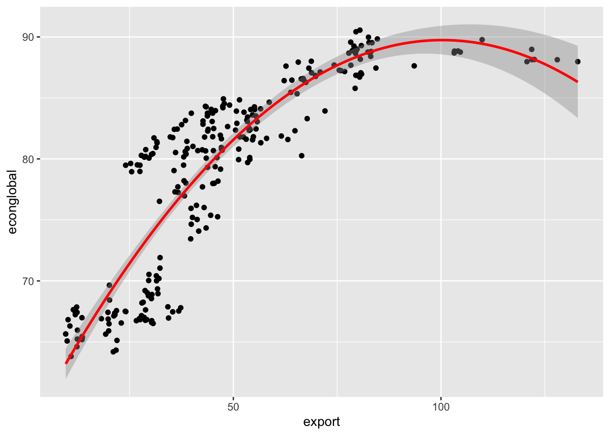

library(tidyverse)Polynomial Models
Lesson 1.1, Applied Machine Learning
Table of Contents
Remember to load tidyverse.
Let us also load the dataset we will be using for these examples (feel free to load your own dataset)
df <- read_csv("voctaxdata.csv")Introduction to Non-Linear Methods
In the course Regression Analysis, we covered standard linear regression, and how that can be used for prediction and statistical inference.
However, linear regression has a major weakness: its specific form allows little flexibility. The linear regression model must take the form:
\[ \hat{y}=\hat{\beta}_0 + \hat{\beta}_1 x_1 + ... + \hat{\beta}_p x_p \]
where \(\hat{\beta}_p\) is the slope (or constant rate of change) of \(\hat{y}\) in regards to \(x_p\). But, most actual real world relationships do not have a consistent rate of change as specified in the linear model.
- In essence, the linear model simplifies the real-world relationship between two variables. Most real-world relationships between two variables are not exactly linear.
While the non-linearity of data isn’t too important when we are concerned with causal inference, it is a major concern if our main goal is prediction. After all, if we want to make accurate predictions, we need models that fit the data well.
For example, let us take the following relationship between export volume and the globalisation of the economy. We can clearly see that this isn’t a linear/straight line relationship.
`geom_smooth()` using method = 'loess' and formula = 'y ~ x'
Polynomial Regression
Polynomial Regression is a way to adjust a linear regression to better fit the data we are trying to predict. Instead of using a straight linear line, we instead use polynomials. Examples of polynomial regression functions include:
\[ Quadratic: \hat{y} = \hat{\beta}_0 + \hat{\beta}_1 x + \hat{\beta}_2 x^2 \]
\[ Cubic: \hat{y} = \hat{\beta}_0 + \hat{\beta}_1 x + \hat{\beta}_2 x^2 + \hat{\beta}_2 x^2 + \hat{\beta}_3 x^3 \]
Or more generally, polynomials take the following form:
\[ \hat{y} = \hat{\beta}_0 + \hat{\beta}_1 x + \hat{\beta}_2 x^2 + ... + \hat{\beta}_d x^d \]
The higher the degree \(d\) of the polynomial, the more flexible we are allowing the relationship between \(x\) and \(y\) to be.
- Basically, higher degree \(d\) means more up and down curves in the polynomial.
Polynomial Models as Moderating/Interaction Effect
If we recall moderating/interaction effect regressions in Statistics II: Regression Analysis, we will remember that an interaction effect is when two different \(x\) variables are multiplied together in a regression.
\[ \hat{y} = \hat{\beta}_0 + \hat{\beta}_1 x_1 + \hat{\beta}_2 x_2 + \hat{\beta}_3 x_1 x_2 \]
Well, polynomials are moderating interaction effects between \(x_1\) and itself: We can demonstrate this by rewriting the polynomial equation (lets take degree \(d=2\) for simplicity).
\[ \hat{y} = \hat{\beta}_0 + \hat{\beta}_1 x_1 + \hat{\beta}_2 x_1^2 \]
Since \(x_1^2 = x_1 * x_1\), we can rewrite the equation as:
\[ \hat{y}= \hat{\beta}_0 + \hat{\beta}_1 x_1 + \hat{\beta}_2 x_1 x_1 \]
Clearly, this resembles the form of a moderating/interaction effect as shown previously.
We can show how \(x_i\) interacts with itself by taking the derivative in respect to \(x_1\) to see how the rate of change between \(x_1\) and \(y\) varies based on the value of \(x_i\)
\[ \frac{d}{dx_1} [\hat{y}]= \frac{d}{dx_1}[\hat{\beta}_0] + \frac{d}{dx_1} [\hat{\beta}_1 x_1] + \frac{d}{dx_1} [\hat{\beta}_2 x_1^2] \]
\[ \frac{d}{dx_1}[\hat{y}] = 0 + \hat{\beta}_1 + 2 \hat{\beta}_2 x_1 \]
\[ \frac{d}{dx_1} [\hat{y}] = \hat{\beta}_1 + 2 \hat{\beta}_2 x_1 \]
Essentially, what this means is that the association between \(x_1\) and \(y\), depends on the value of \(x_1\) where we evaluate the relationship. This introduces non-linearity into our model.
One downside of polynomial regression is that it is difficult to interpret our coefficients.
We can no longer hold other terms constant, since changing \(x\) will also change the value of \(x^2\)
This makes interpretation of coefficients pretty much impossible.
However, we can interpret the significance: if \(p < 0.05\) for a coefficient of \(x^d\) where \(d > 1\), then we can reject the null hypothesis of a linear relationship between \(x\) and \(y\), and conclude that there is a non-linear relationship between \(x\) and \(y\).
Polynomial Models in R
Remember to load tidyverse.
library(tidyverse)Let us also load the dataset we will be using for these examples (feel free to load your own dataset)
df <- read_csv("voctaxdata.csv")Creating the Model in R
We can run a polynomial regression with the functions lm() and poly(). The syntax is as follows:
poly_reg <- lm(Y ~ poly(x, 3), data = df)
# use summary() function to print results
summary(poly_reg)These are the parts of the syntax that can be altered:
poly_reg is the variable I am saving my regression model to. You can name this anything you want to.
Y is the Y variable (Dependent variable) you are trying to predict, and X is the X variables (independent variable) you are using to get your prediction. Replace these with the variables you want to use.
- NOTE: Always put the Y variable before the X variable. Separate the two with a tilda ~
- NOTE: You can add more simply by using a + sign and adding another variable.
3 within the poly() function represents the degree (3 means \(d=3\), or a cubic). You can change this to anything you want to.
- We will discuss how to choose the right polynomial in the next lesson about model selection.
df is the name of the data frame that I am drawing these X and Y variables from. Replace this with the name of your data frame.
Visualisations in R
We can visualise the line we just graphed with the following syntax:
df %>%
ggplot(aes(x = X_variable, y = Y_variable)) +
geom_point() +
geom_smooth(method = "lm", formula = y ~ poly(x, 2), color = "red")These are the parts of the syntax that can be altered:
df is the name of the data frame that I am drawing these X and Y variables from. Replace this with the name of your data frame.
X_variable is the X variable, and Y_variable is the Y variable. Replace these with the variables you want to use.
Example in R
Take the example of the relationship between export volume and the globalisation of the economy, which is the example I used earlier. I will test a quadratic form on the equation, as the graph above kind of looks like a quadratic relationship:
poly_reg <- lm(econglobal ~ poly(export, 2), data = df)
# use summary() function to print results
summary(poly_reg)
Call:
lm(formula = econglobal ~ poly(export, 2), data = df)
Residuals:
Min 1Q Median 3Q Max
-9.2127 -2.3074 0.1383 2.1199 8.5029
Coefficients:
Estimate Std. Error t value Pr(>|t|)
(Intercept) 78.9116 0.2275 346.79 <2e-16 ***
poly(export, 2)1 101.5281 3.6336 27.94 <2e-16 ***
poly(export, 2)2 -43.5789 3.6336 -11.99 <2e-16 ***
---
Signif. codes: 0 '***' 0.001 '**' 0.01 '*' 0.05 '.' 0.1 ' ' 1
Residual standard error: 3.634 on 252 degrees of freedom
Multiple R-squared: 0.7858, Adjusted R-squared: 0.7841
F-statistic: 462.3 on 2 and 252 DF, p-value: < 2.2e-16We can see in the output there are 2 coefficients, one for export at degree 1, and one for export at degree 2.
- Since poly(export, 2)2 is significant with \(p < 0.05\), we can reject the null hypothesis and conclude that there is indeed a non-linear relationship between export and econglobal.
We can visualise the line we just graphed:
df %>%
ggplot(aes(x = export, y = econglobal)) +
geom_point() +
geom_smooth(method = "lm", formula = y ~ poly(x, 2), color = "red")
We can see that this polynomial function follows the curve much better than a linear model would.